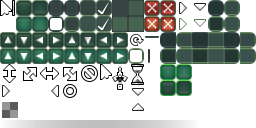

Modanung
Support for SVG images could also make the UI system more flexible considering scaling. I made the current default UI’s theme entirely in Inkscape, but it is read from a PNG. Using the SVG directly could make the default UI more suitable for HDPI, for instance.
Compare:

…and…